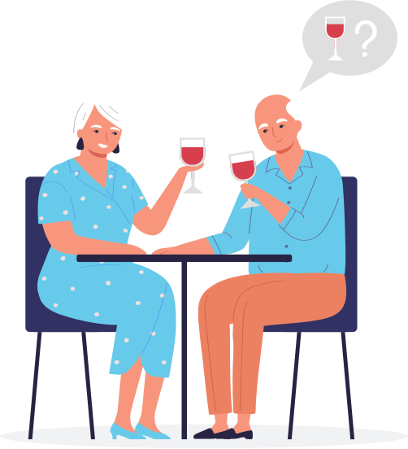
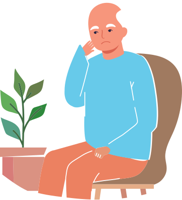
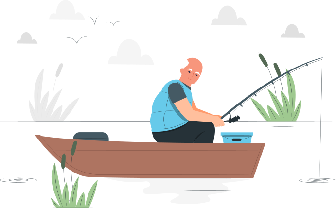
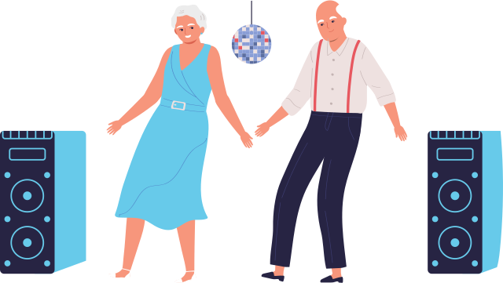

Можно ли заниматься сексом при аденоме простаты
Не существует клуба анонимных больных, которые бы, представляясь, говорили: «Здравствуйте, мне за сорок и у меня аденома простаты». Такие встречи вряд ли пользовались бы популярностью — хотя, как мне в итоге объяснили, с этой болезнью сталкивается каждый третий мужчина после 50 лет. Вот и я попал в эту статистику.

Первые признаки
«Струя стала вялая, с перебоями, да ещё и могло приспичить внезапно»

Bсе началось обычно. То есть, сначала я и не понял, что что-то началось — не было ни резких болей, ни заметного дискомфорта.
Просто постепенно заметил, что каждую ночь мне приходится не по разу вставать помочиться
Причем если раньше все было нормально — долго и звонко, то теперь струя стала вялая, с перебоями, да еще и могло приспичить внезапно.
Я начал нервничать и полез в интернет искать информацию, после чего разнервничался еще больше.
Опасался, что это может быть рак, что придется делать операцию, после которой будет постоянным недержание мочи и вообще не смогу заниматься сексом. Всегда считал себя альфа-самцом, любил женщин, а теперь что же — болезнь и старость?
Попытки самолечения
«Регулярно стали возникать проблемы с потенцией»
Основным стрессовым фактором для меня стали проблемы с сексуальным здоровьем. Было и так неудобно перед женой, что все время встаю ночью.
Из-за переживаний эрекция ухудшилась, и я решил по-быстрому пропить какое-нибудь лекарство. Увидел рекламу одного препарата, начал принимать таблетки, но стало только хуже.
Регулярно стали возникать проблемы с потенцией: то раннее семяизвержение, чего раньше никогда не было, то, наоборот, долго не мог «прийти к финишу», иногда вообще отсутствие эрекции.
Я стал психовать, был в постоянном стрессе, начал испытывать страх перед сексом, так как боялся опять оказаться «не на высоте».
В какой-то момент даже принимал стимуляторы эрекции. Лучше не становилось, и стало понятно, что визита к врачу не избежать.
Консультация
«Мне выписали препарат из группы альфа-адреноблокаторов, причем препарат оригинальный
— не генерик»

Со своей проблемой я обратился к урологу. Врач обнаружил у меня аденому предстательной железы и подробно объяснил, что проблемы с сексом больше психологического характера, из-за моих нервов и страхов. Оказывается, таблетки, которые я пробовал пить, могут вызывать различные побочные эффекты, в том числе и снижение полового влечения.
Именно поэтому важно обратиться к врачу, чтобы он подобрал необходимое именно вам лечение.
Мне выписали препарат из группы альфа-адреноблокаторов, причем препарат оригинальный — не генерик. Основное составляющее в нем — тамсулозин, это вещество действует наиболее эффективно и направленно: помогает расслабиться клеткам гладких мышц, которые расположены в мочевом пузыре и простате.
Уролог сказал мне, что при регулярном приеме препарата увеличится скорость мочеиспускания и улучшится отток мочи, а побочных эффектов типа скачков давления, которые могут появляться от других лекарств, не будет.
И врач объяснил, что это особенные таблеткии, активное вещество из них выделяется постепенно. Поэтому таблетку надо проглатывать целиком, а не разжевывать, и удобно, что не нужно подстраиваться под прием пищи.
Причем врач объяснил, что оригинальный тамсулозин нужно принимать длительно, препарат не вызывает привыкания и не имеет синдрома отмены.
Как насчет секс
«Для меня важно, что я принимаю оригинальный препарат, который не ухудшает потенцию и который я хорошо переношу»

Также я уточнил у врача, можно ли заниматься сексом при аденоме простаты. Ответ меня даже немного удивил: не только можно, но и нужно!
Долгое воздержание не улучшит ситуацию, как и чрезмерная активность — все хорошо в меру. Не стоит также стараться сознательно затягивать половой акт. Для моего возраста будет нормально заниматься сексом как минимум раз в неделю.
Мне предстояло обычное лечение таблетками, но секс не будет противопоказанием и после удаления аденомы простаты! Если пожилой возраст этому не препятствует, у большинства мужчин потенция спокойно восстанавливается. Да и операция не понадобится, если принимать адекватную терапию.
Но важно делать это вовремя — любые лекарства эффективны на ранних стадиях. Хорошо, что в своё время я не стал тянуть с походом к врачу, и это было правильное решение — если бы запустил болезнь и дождался осложнений, операции было бы не избежать.
Повезло мне и с правильно назначенным лечением — для меня важно, что принимаю оригинальный препарат, который не ухудшает потенцию и который я хорошо переношу. А принять одну таблетку раз в день — не проблема.
И теперь после непродолжительного лечения уже чувствую улучшение— не говоря уж о регулярном сексе! Перестал часто бегать в туалет по ночам. И уролог, к которому я хожу, отмечает, что мое состояние улучшилось. Так что я снова герой!